※こちらの記事はＡＩ（Chat GPT 4o）で作成したものを一部加筆しています😆
2024.9に食べに行きました😄 今日のそば巡りは、北谷町北谷にある「まるの家」さんへ行ってきました。このお店、なんとパチスロ屋さんの2階に併設されているんです！✨ ちょっと面白い立地ですよね。実はこの雰囲気、以前訪れた名護市の「我流そば」さんを思い出させてくれました。
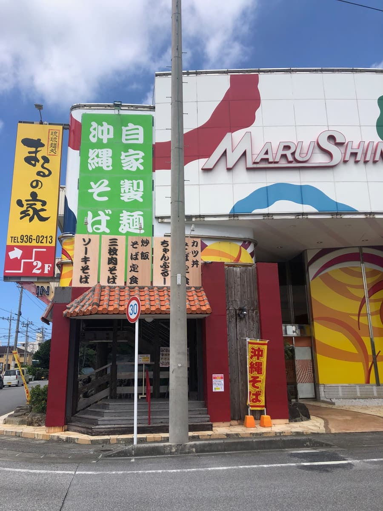

お店の入り口には「自家製麺」の大きな看板がかかっていて、手作り麺へのこだわりが感じられますね！
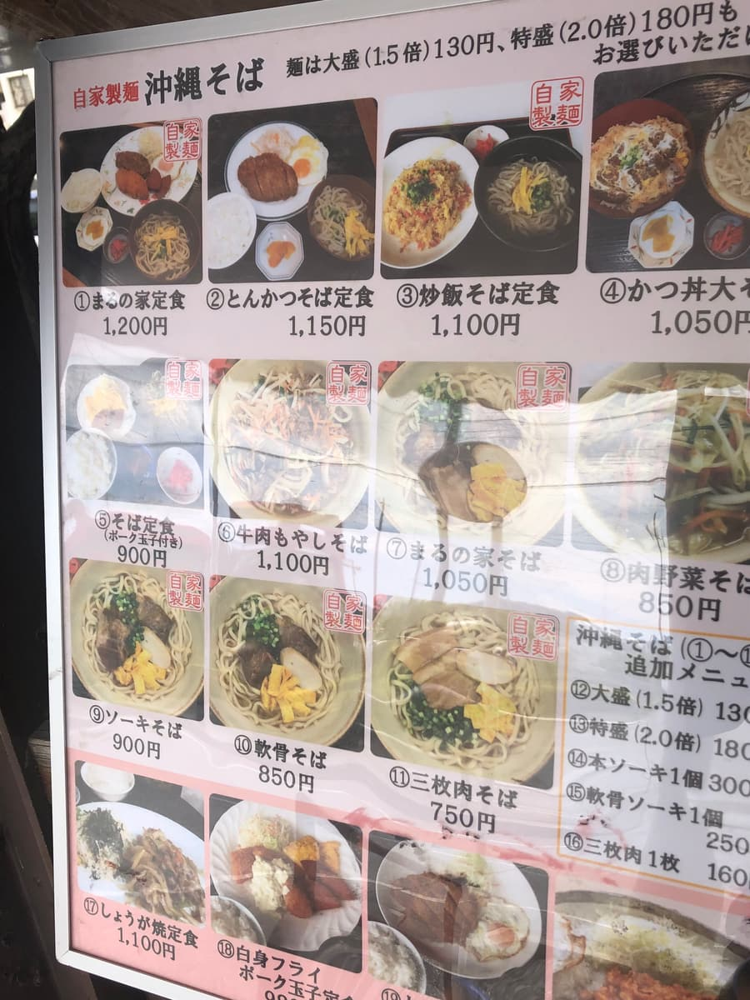
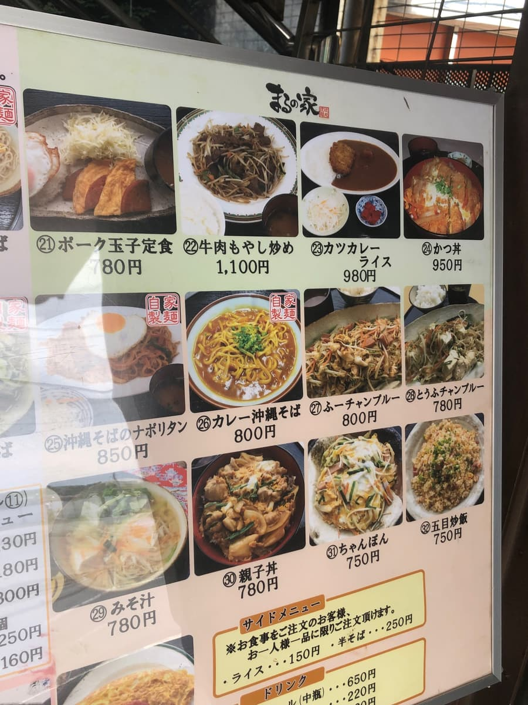
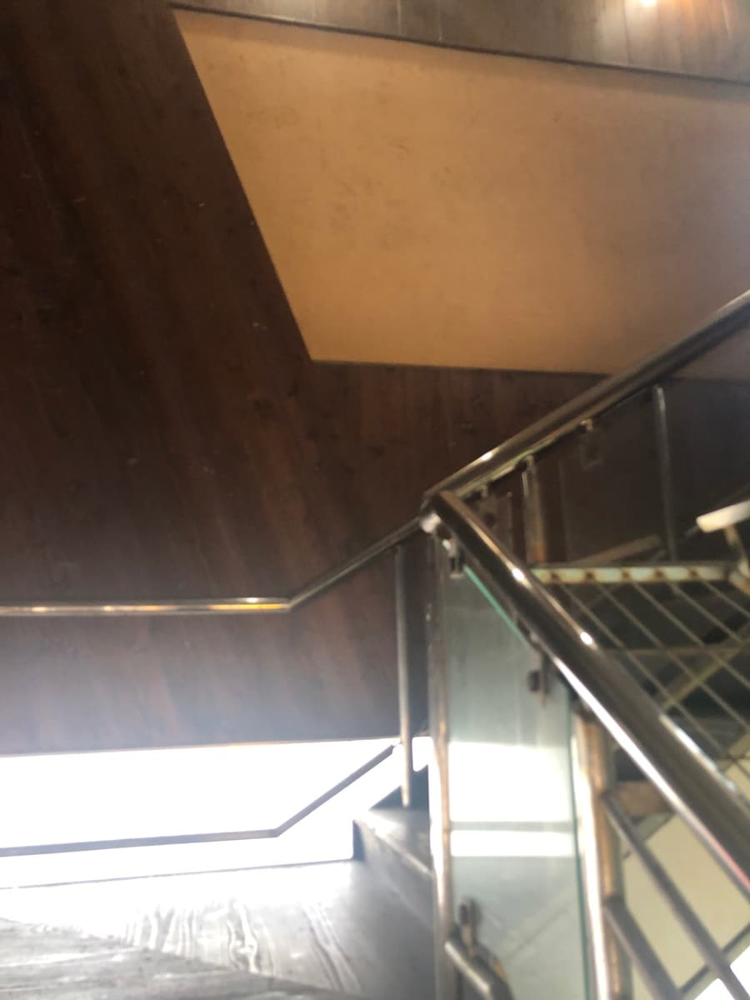
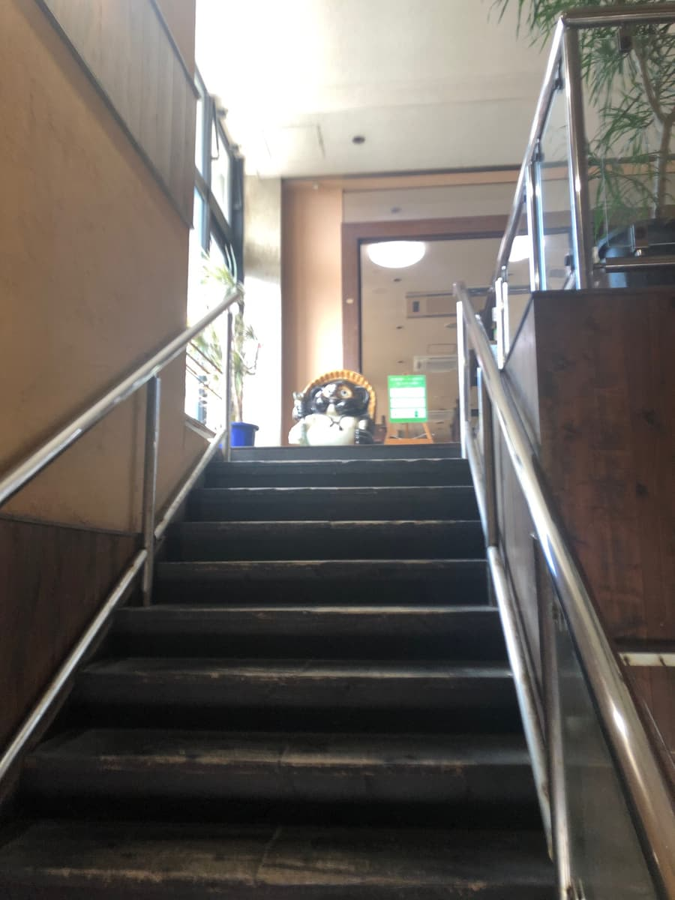
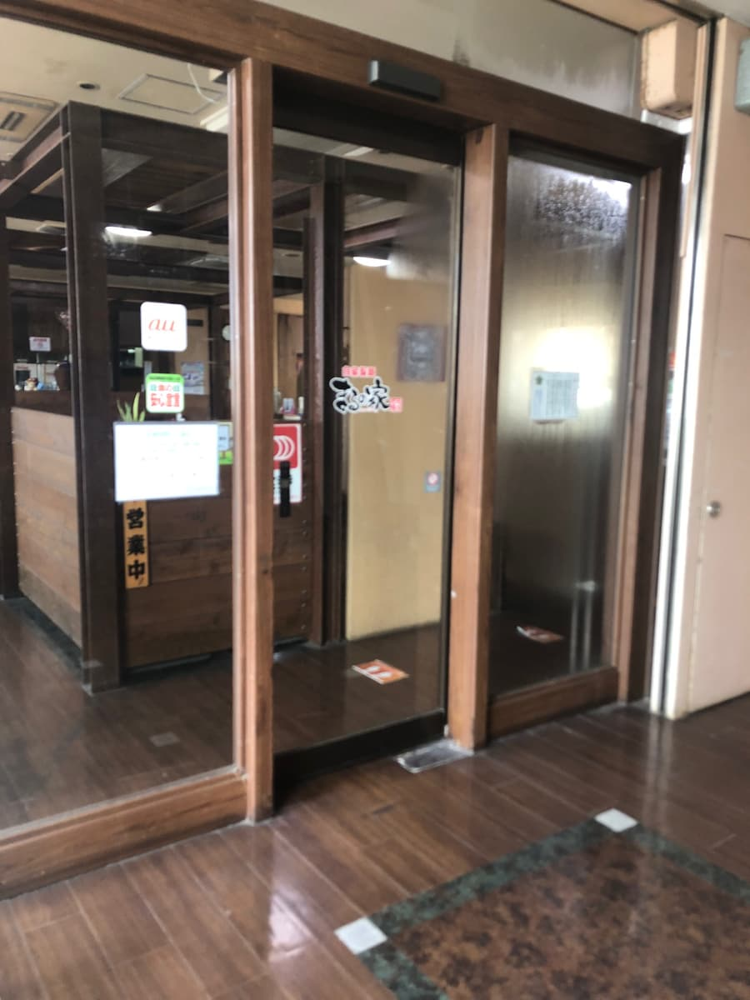
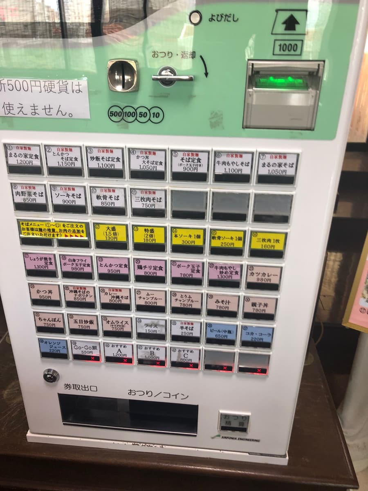
早速券売機で「軟骨そば」を注文。メニューを見ると、沖縄そば以外にも定食やカレーなどが豊富に揃っていて、なんでも食べられそうな雰囲気でしたが、今日はやっぱり定番の沖縄そばをいただくことにしました😊。
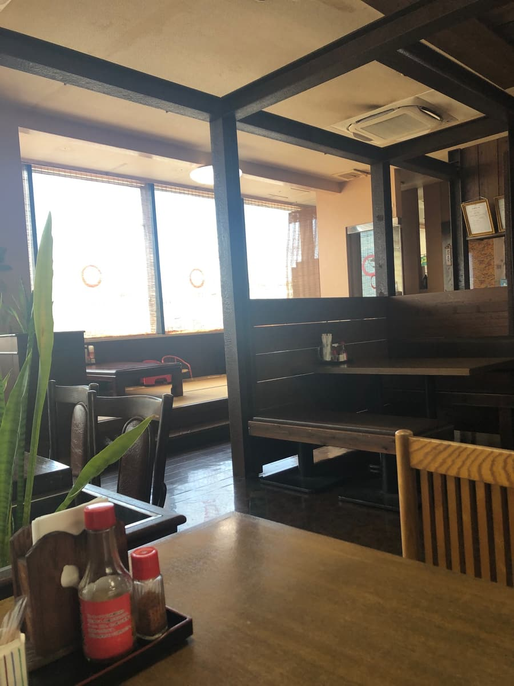
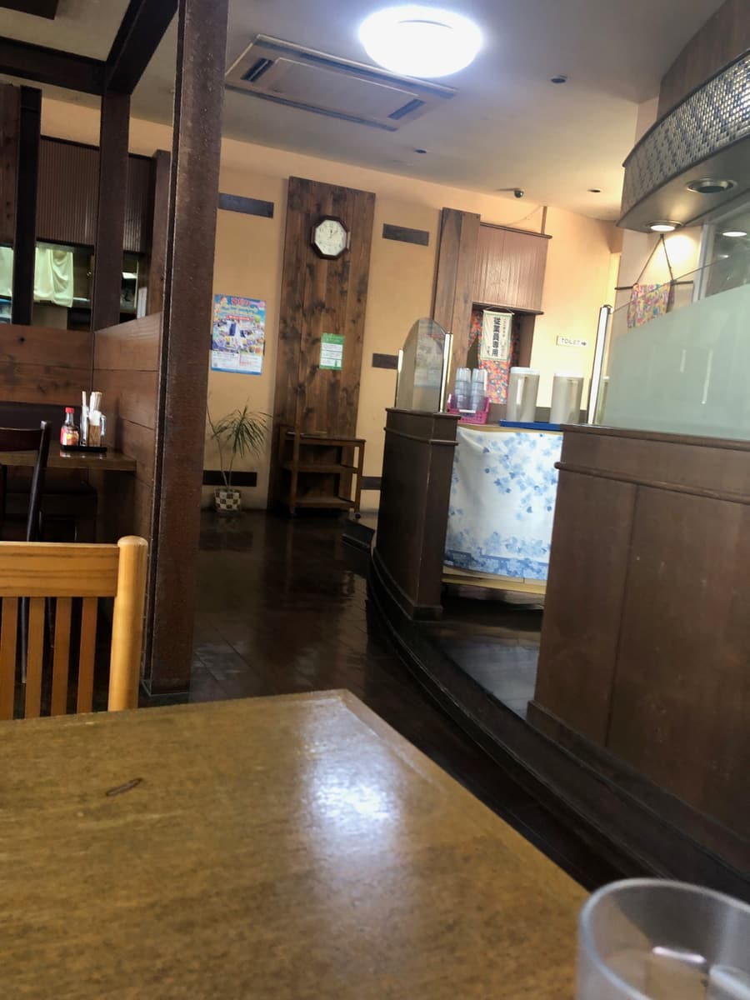
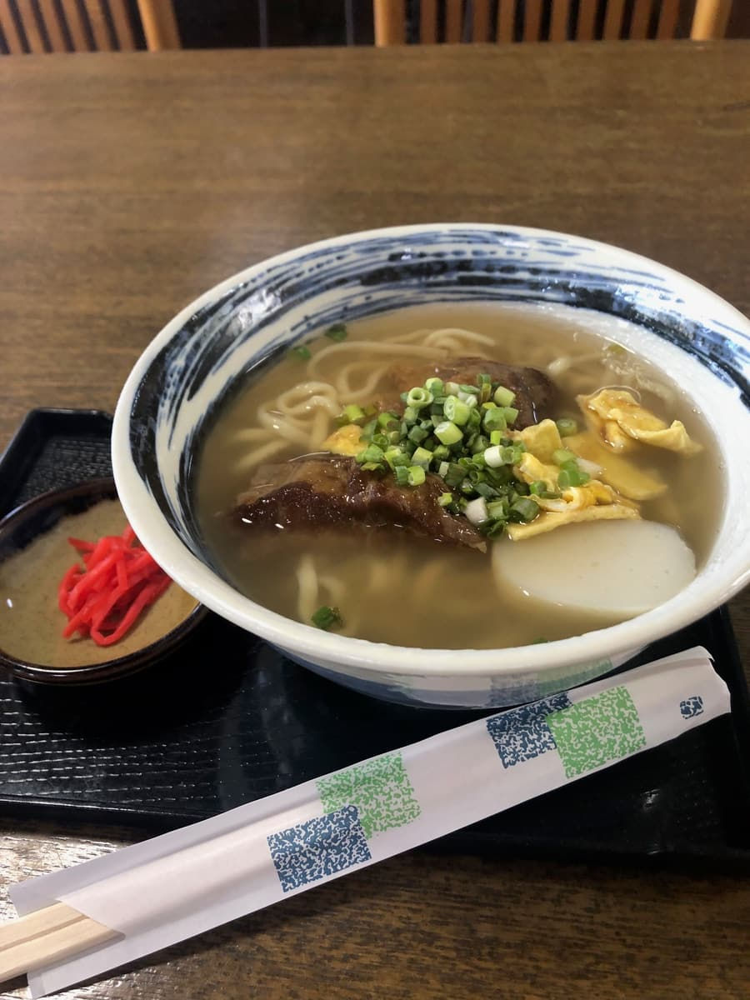
席に座り、運ばれてきた軟骨そばを見てみると、しっかりとしたビジュアル。スープは透明感があり、鰹と豚骨の両方の出汁が程よく混ざり合っている感じがします。鰹と豚骨が感じられる味わいですね。
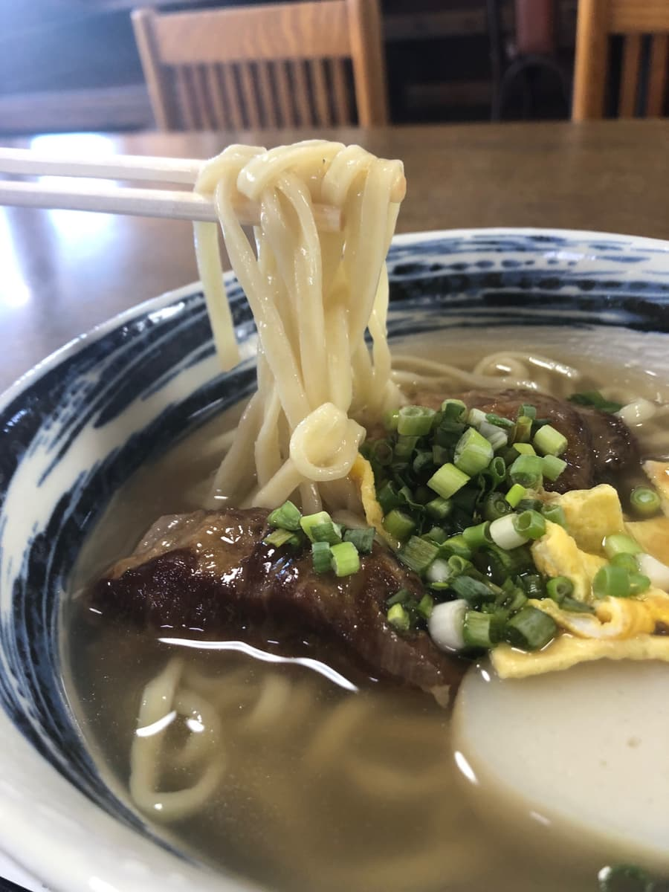
そしてお待ちかねの自家製麺！これがなかなかの美味しさでした🍜。中太のストレート麺で、もちもちとした食感とコシがあり、一口ごとにしっかりとした歯ごたえが楽しめます。この食感がたまりませんね〜。やっぱり「自家製麺」と掲げるだけのことはあります！
具材として入っていた軟骨ソーキは、しっかり煮込まれていて柔らかく、口の中でホロホロと崩れる感じが良かったです。ただ、少し筋感が残っていて、柔らかさは申し分ないですが、筋が多いのはちょっと残念ですね😅。
テーブルには「まるの家」特製のコーレーグースも置かれていて、これを加えると味が一気にピリッと引き締まりました！後半も飽きずに楽しめる工夫がされています。
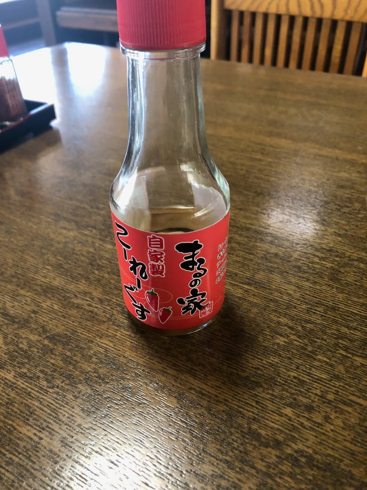
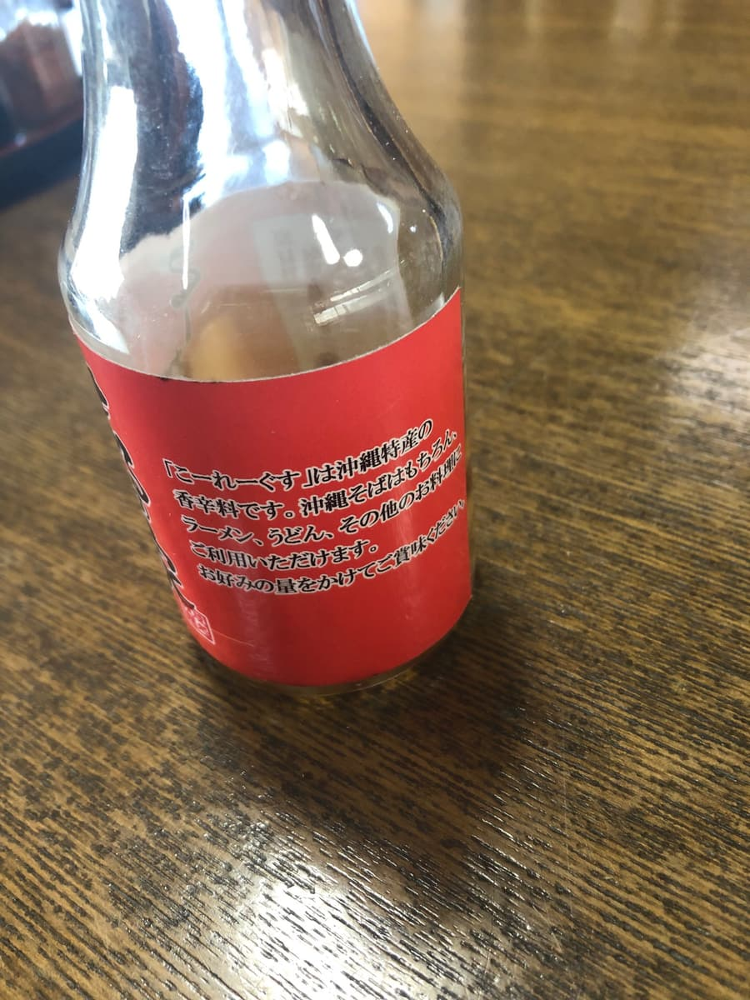
全体的には、麺の美味しさが一番印象に残る一杯でしたね。スープや軟骨ソーキも悪くはないですが、どちらかと言えば普通の範囲に収まる感じ。お店の雰囲気も落ち着いていて、リラックスして食事が楽しめました🍴。
評価（9.5点/15点）：普通に美味しいです。自家製麺はポイント高めですね😄 観光地の北谷町にあるので、観光の際に一度は試しては如何でしょうか😆
次回は他のメニューも試してみたいところですが、今回の軟骨そばも十分に楽しめました！それではまた次の沖縄そば巡りでお会いしましょう！👋🍜
麺 ：★★★✬☆（3.5）
スープ：★★★☆☆（3）
具 ：★★★☆☆（3）